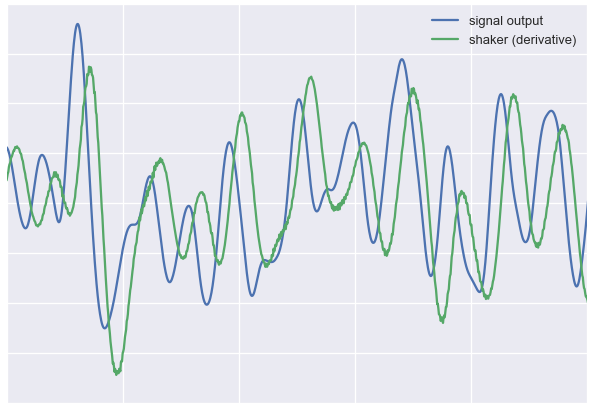
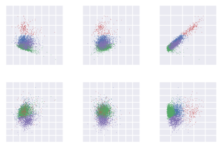

Code showcase
a sample of my coding projects
Overview
This is a sample of my data analysis/coding projects.
Projects description
Rat behavior: mixed trial analysis
This piece of code analyzes behavioral data from a rat experiment. The rat is trained to discriminate vibrational stimuli, which are applied to the whiskers. After receiving a stimulus, the animal can make one of two exclusive choices: attempt to drink from the left water well (further denoted as "go left") or attempt to drink from the right water well (further denoted as "go right"). If the decision is correct (which is determined by a rule binding a certain type of stimulus to a certain side), the rat receives a reward in a form of few drops of water. If the decision was incorrect, nothing happens. In any case, the rat is free to receive the next stimulus, and thus the process repeats. On average, rats make around 200-300 such attempts ("trials") in ~1 hour, before they are satiated and ready to be put back in their home cage.
The stimuli presented to the rats are noisy vibrations (white noise bandpass filtered in the range 10-150 Hz), modulated by sinusoidal envelopes. Here are the examples of two such signals, created by applying 5 Hz (top) and 1 Hz (bottom) envelopes to white noise:

In this project, rats were trained to discriminate 2-second-long noisy stimuli: 5 Hz modulated (must go right to get reward) and 1 Hz modulated (must go left to get reward). At the point of interest for this project, rats reliably discriminated these stimuli with the performance above 70%. What I wanted to test is which part of the stimuli rats give weight in their decision, if any. I designed new type of stimuli, mixed stimuli, which were composed of one modulation frequency in the 1st second and another in the 2nd second. For example, in the 1st second there would be 1 Hz modulation, in the 2nd second -- 5 Hz modulation. Or the order could be reversed. In any case, after receiving such stimulus, the rat could go either left or right and still receive the reward. Mixed stimuli were randomly and quite rarely presented in course of the session, roughly every 15th trial. What choice would the animals make on these trials? How these choices correspond to the performance on the normal trials? These are the questions I try to find answers to in the data.
To summarize: there are 4 types of 2-second-long vibration stimuli presented to rats: 5 Hz modulated ('5-5'), 1 Hz modulated ('1-1'), and, more rarely, mixed modulation '5-1' and '1-5', which have one modulation in the 1st second and another in the 2nd second. Rat make correct choices for 5-5 and 1-1 most of the time, the question is what choices will they make for 5-1 and 1-5?
Navigate to the project notebook
Motor tracking

In vibration experiments we use vibration exciters ("shakers") to generate vibrations with various parameters. The properties of the produced vibration and its relation to the signal we supply to the shaker must be carefully analysed. Here I perform a primary analysis on the vibrations tracked by a laser finder.
Navigate to the project notebook
Spike sorting using PCA and k-means clustering

This is a spike-sorting algorithm I designed for analysing the neuronal data I collected from the barrel cortex. There are many spike sorting algorithms available, but most of them are only suited for a specific "flavour" of neuronal data: some work better for tetrodes, others -- for hippocampal recordings (they tend to have a lot of units close together with very different shapes), still others -- for sharp electrodes. I constructed this particular algorithm to suite my needs of transparency and high customization for sorting single-electrode recordings from the barrel cortex, and to give me a baseline of how well the spikes can be sorted. In this notebook I demonstrate how it works by taking the data from its original form as raw recording (made with Tucker-Davis Technologies RZ2 recording system) to spiketimes with cluster labels, which later can be used for the analysis of neuronal coding.